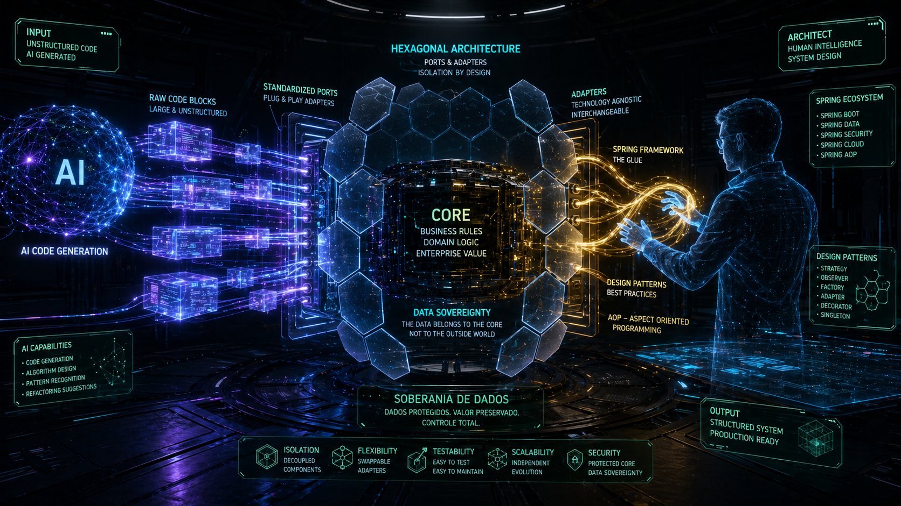

Do Código à Composição
A Nova Engenharia de Software na Cara Core
O desenvolvimento de software em 2026 atravessa uma fronteira definitiva. Na Cara Core Informática, essa fronteira não aparece como uma ruptura barulhenta, mas como uma mudança silenciosa de postura. Antes, a pergunta principal era: "como escrever este trecho de código?". Agora, a pergunta ficou maior: "como compor um sistema inteiro, confiável, auditável e soberano, a partir de peças cada vez mais inteligentes?"
Essa mudança parece simples quando descrita em uma frase, mas altera quase tudo. Ela muda a forma como estudamos, como planejamos produtos, como olhamos para a infraestrutura e até como entendemos o papel humano dentro da engenharia. Não estamos apenas escrevendo linhas de comando; estamos regendo ecossistemas que unem a robustez do Java, a maturidade de frameworks consolidados do nosso repertório, a precisão dos padrões de arquitetura e a agilidade da Inteligência Artificial.
O ponto central dessa jornada é a soberania de dados. Em um mercado cada vez mais dependente de plataformas externas, integrações remotas e serviços que podem falhar no momento menos conveniente, a Cara Core Informática segue uma direção própria: construir soluções que funcionem com clareza, segurança e controle.
O Paradigma dos Grandes Pedaços
A programação moderna, especialmente dentro da nossa stack, deixou de ser um esforço concentrado apenas nos "pequenos pedaços" de código. Durante muito tempo, dominar software significava conhecer cada detalhe de cada função, cada condicional, cada consulta ao banco de dados e cada ligação entre telas e serviços. Esse domínio continua importante, mas ele deixou de ser o único centro da prática.
Com o auxílio da IA, o foco mudou para a composição. A Inteligência Artificial consegue agrupar funções complexas em blocos lógicos, sugerir estruturas, montar controladores, organizar entidades, propor testes e acelerar tarefas que antes consumiam horas de repetição. Esses blocos são os "grandes pedaços": conjuntos de comportamento que já nascem com intenção, contexto e uma direção técnica.
Mas aqui está a descoberta mais importante: a IA não elimina a engenharia. Ela aumenta a responsabilidade do engenheiro.
Quando um sistema é formado por grandes pedaços, alguém precisa saber se esses pedaços se encaixam. Alguém precisa perceber se uma regra fiscal foi colocada no lugar certo, se uma dependência não invadiu o domínio, se uma integração externa não ficou acoplada demais, se uma aparente economia de tempo hoje não criará uma dívida técnica amanhã.
É como sair da fabricação de tijolos e entrar na engenharia de pontes. O tijolo continua existindo, e continua sendo fundamental. Mas a pergunta que decide o sucesso da obra é outra: qual carga essa ponte precisa suportar? Como ela se comporta em uma tempestade? O que acontece quando uma parte falha? Como garantir que a estrutura continue útil daqui a cinco anos?
Frameworks Como Cola de Composição
Nesse cenário, frameworks de composição e injeção de dependência atuam como uma espécie de cola estrutural. Historicamente, o Spring Framework cumpriu esse papel em parte importante da nossa evolução. No estado mais recente do CaraCore PDV, a base canônica já se apoia em Quarkus + JavaFX, mantendo a mesma exigência de fronteiras claras entre responsabilidade e infraestrutura.
A Programação Orientada a Aspectos, ou mecanismos equivalentes de tratamento transversal, completa esse desenho. Logs, transações, segurança e auditoria são preocupações que atravessam o sistema inteiro. Se cada regra de negócio precisar cuidar manualmente desses temas, a lógica principal se perde no meio de detalhes repetidos.
IA -> acelera blocos de comportamento
Framework -> conecta dependências com disciplina
AOP -> organiza preocupações transversais
Arquitetura -> protege o domínio
Soberania -> mantém o cliente no controleEssa combinação permite que os grandes pedaços gerados ou acelerados pela IA sejam integrados com disciplina. A IA ajuda a levantar paredes; o framework certo ajuda a manter o prédio de pé; a arquitetura garante que ainda saibamos onde ficam as vigas.
A Evolução dos Design Patterns
Os padrões de projeto não morreram; eles subiram de nível. Em alguns momentos, pode parecer que a IA torna os design patterns menos necessários, porque ela consegue gerar código rapidamente. Na prática, acontece o contrário. Quanto mais rápido o código aparece, mais importante se torna ter padrões para avaliar, organizar e corrigir esse código.
Na Cara Core, utilizamos MVC e Arquitetura Hexagonal como moldes fundamentais para garantir desacoplamento. Esses padrões não são enfeites acadêmicos. Eles funcionam como instrumentos de sobrevivência em sistemas que precisam durar. No caso do PDV, essa disciplina hoje aparece com mais nitidez no desenho modular entre núcleo, fiscal/pagamentos, segurança de plataforma e aplicação executável.
Arquitetura Hexagonal protege o "Core" de nossos sistemas. O coração da aplicação não sabe se o banco de dados é um SQLite local, um PostgreSQL em rede, uma API externa ou um serviço futuro que ainda nem existe. Ele interage com portas, contratos e interfaces. Do lado de fora, adaptadores fazem a tradução entre o mundo real e o domínio da aplicação.
Essa separação é vital para a nossa filosofia de Bunker Digital. Um sistema soberano não pode depender cegamente de uma única infraestrutura. Ele precisa operar offline quando necessário, sincronizar quando possível, proteger os dados locais e manter o cliente no controle da própria operação.
MVC garante que a evolução da interface não comprometa a estabilidade dos dados. A tela muda, o comportamento do usuário muda, o dispositivo muda, mas a regra central não deve se desfazer a cada novo ajuste visual.
Em um tempo dominado por interfaces bonitas, animações e painéis cheios de recursos visuais, essa distinção é mais atual do que nunca. A Cara Core valoriza a eficiência antes do ornamento. Quando falamos no "Poder da Tela Preta", não estamos rejeitando a interface; estamos lembrando que a informação correta, no momento certo, vale mais do que qualquer camada decorativa.
A IA Como Companheira de Descoberta
Existe uma tentação comum quando se fala de Inteligência Artificial: tratá-la como mágica ou como ameaça. Na prática diária da Cara Core, ela não é nem uma coisa nem outra. A IA funciona como uma companheira de descoberta. Ela acelera hipóteses, revela caminhos, sugere alternativas e permite testar ideias com uma velocidade inédita.
O ganho mais interessante não está apenas em gerar código. Está em conversar com a complexidade. Uma regra tributária pode ser quebrada em etapas. Uma integração pode ser simulada. Uma arquitetura pode ser discutida antes de ser implementada. Um erro pode ser investigado por ângulos diferentes. A IA amplia o campo de visão do desenvolvedor.
Mas toda descoberta precisa de método. Sem método, a velocidade vira ruído. Por isso, o uso da IA dentro da Cara Core está ligado a alguns princípios simples: entender antes de aceitar, testar antes de confiar, isolar antes de integrar e documentar antes de esquecer.
O Ecossistema de Produtos Cara Core
É nesse ponto que a reflexão deixa de ser apenas conceitual. Se a IA acelera a composição e a arquitetura dá forma ao sistema, a validação real aparece nos produtos. Na Cara Core, método técnico não fica separado da entrega: ele precisa virar ferramenta, rotina e resposta operacional.
Nosso aprendizado é aplicado diretamente em uma linha de produtos projetada para a realidade brasileira de 2026. Cada produto funciona como uma resposta prática a uma pergunta que encontramos no caminho.
CaraCore-PDV nasce da pergunta: como garantir que o comércio continue operando diante da complexidade fiscal? Com a Reforma Tributária 2026, o varejo brasileiro entra em um período de adaptação profunda. Não basta emitir uma venda; é preciso compreender regras, transições, documentos, cálculos e obrigações que mudam a rotina do empresário.
O CaraCore-PDV é a nossa resposta à complexidade fiscal. No estado técnico consolidado em maio de 2026, ele opera como um PDV desktop Windows com Quarkus, JavaFX e SQLite local, priorizando soberania operacional, rastreabilidade e disciplina de evolução. O foco é conformidade, estabilidade e clareza, com a ressalva de que homologação fiscal formal e integrações futuras precisam ser sempre distinguidas do que já está efetivamente comprovado no checkout atual.
Cara Core HUB nasce da pergunta: como conectar o comércio local ao mundo sem entregar o controle dos dados? Com marco de roadmap em 06/04/2027, o HUB atua como uma central de inteligência logística. Ele conecta o e-commerce local aos grandes marketplaces, gerencia fluxos de dados e organiza integrações que poderiam se tornar caóticas se fossem tratadas de forma isolada. Aqui, o ponto importante é de enquadramento: trata-se de um marco de roadmap, nao de capacidade presente já entregue ao cliente do PDV.
RU (Bioreator) nasce da pergunta: como transformar infraestrutura técnica em organismo vivo? Com marco de roadmap em 18/06/2027, o RU representa uma inovação interna na forma como pensamos base tecnológica. O nome Bioreator sugere justamente essa ideia de um núcleo que processa, reage, alimenta e sustenta outras partes do ecossistema. Novamente, isso deve ser lido como direção de ecossistema e não como camada operacional já consolidada no produto atual.
Cara Core CSO nasce da pergunta: como levar essa mesma disciplina para transportes e logística de serviços? O sistema, voltado ao setor de transportes e logística de serviços, segue no roadmap com marco em 08/11/2028. Esse prazo estendido não é recuo; é compromisso. Também aqui a comunicação precisa permanecer factual: roadmap é roadmap, nao entrega vigente.
O CSO carrega de forma forte o "Poder da Tela Preta": priorizar eficiência e dados sobre ornamentos visuais desnecessários. No transporte, uma informação objetiva vale muito. Um status correto, uma rota bem registrada, uma ordem clara e uma consulta rápida podem resolver mais do que uma interface bonita e lenta.
A Hierarquia do Conhecimento
Mas produto nenhum nasce apenas de stack, framework ou cronograma. Por trás de cada entrega existe uma forma de organizar responsabilidade, memória e decisão. Para entender por que a Cara Core escolhe esse caminho de soberania, é preciso olhar também para a hierarquia interna que sustenta a continuidade do trabalho.
Internamente, operamos sob uma estrutura de organização que respeita continuidade e sucessão. O conceito do "Quinto Elemento", representando o genitor ou a geração acima, e o "Quarto Elemento", a geração atual representada por mim e meu irmão, define como o conhecimento técnico e a visão de negócio são transmitidos e executados dentro da empresa.
Essa hierarquia não é apenas simbólica. Ela ajuda a lembrar que tecnologia não nasce no vazio. Cada decisão carrega história, experiência, tentativa, erro e aprendizado acumulado. O Quinto Elemento representa a origem, a referência, a memória de trabalho e de responsabilidade. O Quarto Elemento representa a execução atual, a tradução desse legado para um mundo de IA, Java 21, arquiteturas resilientes e produtos conectados.
A geração anterior ensina que estabilidade importa, que cliente real não pode ser tratado como ambiente de teste, que promessa técnica precisa virar entrega. A geração atual aprende a usar novas ferramentas sem abandonar esse fundamento. É nesse encontro que a Cara Core encontra sua identidade.
O resultado é uma cultura técnica que não se apaixona apenas pela novidade. A novidade interessa, claro. Ela desperta curiosidade, abre portas e muda o jogo. Mas ela precisa provar seu valor dentro de uma operação concreta.
Amarra: O Poder da Soberania
Essa hierarquia de conhecimento fecha o círculo iniciado na engenharia. A mesma disciplina que orienta a composição de software orienta a sucessão de decisões: preservar o que dá estabilidade, absorver o que aumenta capacidade e recusar aquilo que tira controle da operação.
A Cara Core Informática não apenas desenvolve software; nós construímos ativos de soberania. Essa frase resume a direção, mas agora ela pode ser vista com mais profundidade. Soberania não é isolamento. Não é rejeitar integrações, nuvem, marketplaces ou inteligência artificial. Soberania é manter o comando da operação mesmo quando tudo isso faz parte do cenário.
Seja através do Java 21, da implementação de arquiteturas resilientes, do uso ético da IA ou da construção de produtos voltados para a realidade brasileira, o objetivo é claro: garantir que o cliente tenha controle total sobre sua operação e seus dados. Controle para vender. Controle para auditar. Controle para integrar. Controle para continuar funcionando.
O aprendizado de hoje é a base da estabilidade de amanhã. Cada experimento com IA, cada escolha de arquitetura, cada padrão aplicado e cada produto planejado fazem parte de uma mesma jornada. Estamos aprendendo a compor sistemas maiores sem perder a clareza dos pequenos detalhes.
No fim, a nova engenharia de software na Cara Core Informática talvez seja isso: transformar curiosidade em método, método em produto e produto em soberania. Estamos organizando base para atravessar a Reforma Tributária, os desafios da integração global e a evolução da inteligência artificial sem perder o controle do bunker local. O ponto central aqui nao é proclamar chegada definitiva, mas deixar claro o rumo técnico e a disciplina com que ele está sendo construído.
Por isso a forma de apresentar este registro também importa. A escolha por clareza, texto direto e dados verificáveis não é apenas estética; ela acompanha a própria filosofia do artigo.
Hashtags
Contato
- E-mail: suporte@caracore.com.br
- Site: www.caracore.com.br
- LinkedIn: Cara Core Informática
Software soberano, arquitetura resiliente e produtos pensados para a realidade brasileira.
Conhecer a Cara Core
Artigo publicado em 7 de agosto de 2026
© 2026 Cara Core Informática. Todos os direitos reservados.